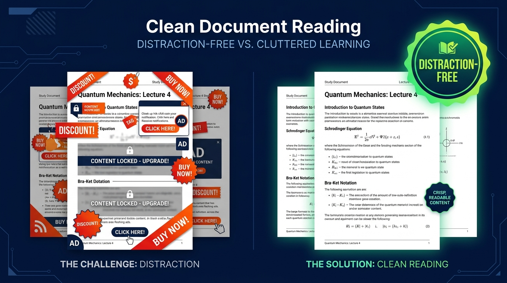

Chế Độ Đọc Tập Trung Cho
Studocu & Scribd
Dọn sạch banner vướng mắt, loại bỏ overlay che chữ và định dạng trang in PDF A4 sắc nét chỉ với 1 click. Trải nghiệm đọc tài liệu chuyên nghiệp dành riêng cho sinh viên ôn thi.
Khác Biệt Rõ Ràng Ngay Tức Thì
Trải nghiệm học tập tập trung tối đa. Đọc bài giảng không bị làm phiền bởi các cửa sổ mời chào nâng cấp VIP.

Khi Chưa Dùng DocCleaner
- Banner quảng cáo và thanh nổi che lấp nội dung bài học.
- Popup nâng cấp VIP nhảy liên tục làm đứt mạch ôn thi.
- Khi in ra PDF bị lỗi trang trắng do cơ chế tải chậm (lazy load).
- Chữ bị mờ và che khuất bởi các lớp phủ quảng cáo nền.
Khi Dùng DocCleaner (Miễn Phí)
- 100% Bố Cục Sạch: Nền trang được dọn gọn gàng ngay khi mở web.
- Tập Trung Học Tập: Đọc rõ công thức, sơ đồ và từng dòng chữ.
- 1-Click In A4 Chuẩn: Nạp toàn bộ các trang trước khi in sắc nét.
- An Toàn & Riêng Tư: Chạy 100% trên máy của bạn, không thu thập dữ liệu.
Được Thiết Kế Cho Mùa Thi Cử
Mọi tính năng đều hướng tới việc giúp bạn đọc tài liệu nhanh hơn và lưu trữ bản in đẹp mắt hơn.
Bố Cục Đọc Sạch Hoàn Toàn
Tự động dọn dẹp các lớp banner, khung mờ và bảng hỏi cookie ngay từ khi bắt đầu tải trang (document_start).
Bộ Nạp Trang Khắc Phục Trang Trắng
Khắc phục triệt để lỗi trang trắng khi cuộn ảo bằng cách nạp toàn bộ 100% trang tài liệu vào bộ nhớ trước khi mở hộp thoại in.
Không Cloud, Không Theo Dõi
Hoạt động hoàn toàn offline bên trong trình duyệt. Không bao giờ gửi dữ liệu lướt web về máy chủ ngoài.
Hỗ Trợ Studocu & Scribd
Quy tắc làm sạch DOM được tối ưu chuyên biệt cho studocu.com, studocu.vn và scribd.com.
3 Bước Đơn Giản Có Ngay Bản In Đẹp
Không cần tạo tài khoản, không cần cấu hình phức tạp. Mọi thứ tự động 100%.
Cài Đặt Tiện Ích
Bấm 'Thêm vào Chrome' trên Cửa hàng trực tuyến. Cài xong trong 5 giây, hoàn toàn miễn phí.
Mở Trang Tài Liệu
Mở bất kỳ tài liệu học tập nào trên Studocu hoặc Scribd. Tiện ích sẽ tự động dọn sạch giao diện.
Bấm 'Định Dạng In'
Bấm nút nổi góc dưới bên phải. Chờ vài giây để hệ thống nạp đủ trang rồi chọn 'Lưu dưới dạng PDF'.
Biến Tài Liệu Sạch Thành Đề Ôn Thi AI Trên Quizken.com
Định dạng bài giảng đẹp chỉ là bước đầu. Tải tài liệu PDF hoặc nội dung tóm tắt lên Quizken AI để tự động sinh đề trắc nghiệm, tạo flashcard và luyện đề thi thử thần tốc.
Tạo Đề Trắc Nghiệm Tự Động
Tải lên file bài giảng hoặc dán văn bản để AI tạo ngay các câu trắc nghiệm 4 đáp án bám sát kiến thức môn học.
Ghi Nhớ Chủ Động (Active Recall)
Nhớ lâu gấp 3 lần các định nghĩa, công thức toán lý hóa và điều luật thông qua các vòng luyện tập tương tác.
Miễn Phí & Dành Cho Sinh Viên
Bộ đôi hoàn hảo: làm sạch tài liệu với DocCleaner, giải đề và kiểm tra kiến thức trên Quizken.com.
DocCleaner áp dụng chuẩn định dạng nào để đảm bảo tài liệu Studocu/Scribd in ra không bị dính trang trắng?
Giải Đáp Thắc Mắc
Những câu hỏi phổ biến nhất về cách hoạt động và độ an toàn của DocCleaner.
DocCleaner có thực sự miễn phí 100% không?
Hoàn toàn miễn phí! DocCleaner là dự án mã nguồn mở và miễn phí vĩnh viễn. Không có gói nâng cấp trả phí, không thu phí duy trì định kỳ.
Tiện ích này chạy được trên trình duyệt nào?
Hoạt động mượt mà trên tất cả trình duyệt nhân Chromium như Google Chrome, Microsoft Edge, Brave, Opera, và Cốc Cốc trên Windows, macOS lẫn Linux.
DocCleaner có lưu thông tin cá nhân của tôi không?
Tuyệt đối không. DocCleaner chạy hoàn toàn offline trên máy tính của bạn. Tiện ích không có mã theo dõi và không kết nối đến bất kỳ máy chủ bên ngoài nào.
Làm sao để in PDF không bị mất trang hay dính trang trắng?
Hãy dùng nút nổi 'Định dạng in' của DocCleaner thay vì bấm Ctrl+P thông thường. Hệ thống sẽ tự động cuộn nạp trước 100% ảnh và chữ vào bộ nhớ rồi mới gọi hộp thoại in.
Tôi có thể ủng hộ tác giả bằng cách nào?
Bạn có thể đánh giá 5 sao trên Cửa hàng Chrome, tặng sao trên GitHub hoặc mời tác giả một ly cà phê qua MoMo/VietQR hoặc Buy Me A Coffee.
Xây Dựng Bằng Cả Tâm Huyết
DocCleaner được phát triển độc lập. Nếu tiện ích này giúp bạn qua môn thi hoặc hoàn thành đồ án tốt nghiệp, hãy mời tác giả một ly cà phê nhé!
Bắt Đầu Đọc Tài Liệu Tốt Hơn Ngay Hôm Nay
Tham gia cùng hàng nghìn sinh viên đang học tập tập trung trên Studocu và Scribd.
Thêm vào Chrome — Tiện Ích Miễn Phí